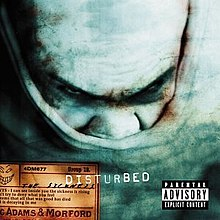
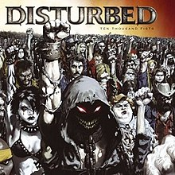
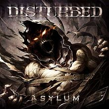

-
The Sickness (2000)
The Sickness is the debut studio album by American heavy metal band Disturbed, released on March 7, 2000 by Giant and Reprise Records. The album peaked at number 29 on the US Billboard 200, and has spent a total of 103 weeks on the chart as of June 2011. It was Disturbed's only album to not hit number one on the US Billboard 200 until their seventh album Evolution debuted at number 4 in 2018. In 2018, The Sickness was certified five times platinum by the RIAA for shipments of over five million copies in the US, making it the band's most successful album.
-
 Believe (2002)
Believe (2002)Believe is the second studio album by American heavy metal band Disturbed, released on September 17, 2002 by Reprise Records. Produced by the band and Johnny K, it focuses heavily on religious and spiritual themes inspired by recent tragedies. With greater emphases on melodic dynamics, it also demonstrates a broadening in the band's musical range compared to their 2000 debut The Sickness. Believe was the last album to feature original bassist Steve "Fuzz" Kmak before he was fired from the band in 2003.
-
Ten Thousand Fists (2005)
Ten Thousand Fists is the third studio album by American heavy metal band Disturbed. It was released on September 20, 2005 and became Disturbed's second consecutive number 1 debut on the Billboard 200 in the United States, shipping around 239,000 copies in its opening week. It has been certified Platinum by the RIAA and was also the band's second number 1 release in New Zealand. It is also the first Disturbed album to not have the Parental Advisory label.
-
_cover.jpg) Indestructible (2008)
Indestructible (2008)Indestructible is the fourth studio album by American heavy metal band Disturbed. A self-produced effort, Indestructible is the first Disturbed album that did not feature Johnny K, the producer of Disturbed's previous three albums, The Sickness, Believe, and Ten Thousand Fists. Indestructible was recorded at Groovemaster Studios in Chicago, Illinois. The album features two songs, "Perfect Insanity" and "Divide", that were written by Disturbed prior to their first album, The Sickness, but were never previously released.
-
Asylum (2010)
Asylum is the fifth studio album by American heavy metal band Disturbed. Asylum is meant to take a fresh direction in the band's music career, while remaining consistent with the band's previous albums. Most of the lyrical content was inspired by aspects of frontman David Draiman's life prior to making the album. The album was released on August 31, 2010 in the United States through Reprise Records. A tour in support of the album, titled the Asylum Tour, started in late August 2010. Asylum is also the third consecutive Disturbed album to not feature the Parental Advisory label.
-
 Immortalized (2015)
Immortalized (2015)Immortalized is the sixth studio album by American heavy metal band Disturbed. The album was released on August 21, 2015 by Reprise Records, and is Disturbed's first studio album since Asylum (2010), marking the longest gap between two studio albums in their career. With 98,000 album-equivalent units in its first week, Immortalized is Disturbed's fifth consecutive number-one debut on the United States Billboard 200 chart. They are the third band in history to achieve this feat, after Metallica and Dave Matthews Band.
-
.jpg) Evolution (2018)
Evolution (2018)Evolution is the seventh studio album by American heavy metal band Disturbed. It was released on October 19, 2018, by Reprise Records. The album's first single, "Are You Ready", was released before the album in August 2018, while the second single, "A Reason to Fight", was released a month later. The album debuted at number four on the Billboard 200, making it Disturbed's sixth straight top 5 album. It is the band's first album since The Sickness to not reach number one, thus ending the band's streak of number one albums at five.